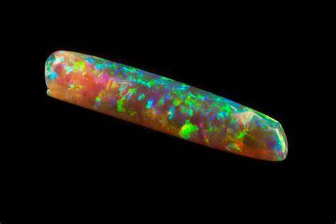

Opal: Comprehensive Guide to the Play-of-Color Gemstone
Chemical Formula: SiO₂·nH₂O (Silica)
Color: Various (White, Black, Fire, etc.) with Play-of-Color
Hardness: 5.5 - 6.5 on the Mohs scale
Crystal System: Amorphous
Localities: Australia, Ethiopia, Mexico, Brazil
Common Uses: Jewelry, Decorative Items, Carvings
Opal is one of the most unique and mesmerizing gemstones, celebrated for its vibrant play of color and endless variety. Unlike most gemstones, opal does not have a crystalline structure but is instead composed of tiny silica spheres arranged in a lattice. When light passes through these spheres, it diffracts, creating the stunning array of colors that opal is known for. This phenomenon is known as “play-of-color” and it gives opal its characteristic fiery appearance.
The name "opal" is believed to originate from the Sanskrit word "upala," meaning "precious stone," and the Greek word "opallios," meaning "to see a change of color." Opal has been cherished throughout history, particularly in ancient Rome and medieval Europe, where it was considered a symbol of hope, purity, and truth.
Formation and Types of Opal
Opal forms in silica-rich environments, typically in areas where ancient seas or geothermal activity once existed. As water evaporates, it leaves behind a silica deposit, which can fill cavities and fissures in rocks. Over millions of years, these deposits harden into opal. The stone is unique in that it can contain up to 20% water within its structure, which contributes to its delicate nature.
There are several types of opal, each with its own distinct characteristics:
Precious Opal

This type of opal is known for its play-of-color, displaying a spectrum of colors when viewed from different angles. Precious opal is the most valued type of opal and is often used in fine jewelry.
Common Opal (Potch)
Unlike precious opal, common opal does not display play-of-color. It can be found in a variety of colors including white, gray, yellow, and brown, and is often used in carvings or as a base material for doublets and triplets.
Boulder Opal
Found primarily in Queensland, Australia, boulder opal forms in an ironstone or sandstone matrix. It displays vivid play-of-color against a dark background and is highly prized for its striking appearance.
Black Opal
Black opal is the rarest and most valuable type of opal, characterized by its dark body tone, which enhances the play-of-color. Most black opals come from the Lightning Ridge area in New South Wales, Australia.
Fire Opal
Fire opal is known for its vibrant orange, red, or yellow body color, often with a transparent or translucent appearance. While not all fire opals display play-of-color, their intense body color makes them highly sought after.
Ethiopian Opal
Ethiopian opal has gained popularity in recent years due to its vibrant play-of-color and unique patterns. It is often hydrophane, meaning it can absorb water and change its appearance when wet.
Structure and Properties of Opal
Opal is an amorphous form of silica, meaning it lacks a defined crystalline structure. It belongs to the mineraloid group, and its composition is primarily silica (SiO₂·nH₂O) with a water content that can range from 3% to 21%.
- Hardness: Opal has a hardness of 5.5 to 6.5 on the Mohs scale, making it relatively soft and susceptible to scratching and damage. Its fragility requires careful handling and setting in protective jewelry designs.
- Color: The most distinctive feature of opal is its play-of-color, which can include flashes of red, orange, yellow, green, blue, and violet. The body color of opal can also vary, with white, black, and fire-colored opals being the most well-known.
- Luster: Opal exhibits a vitreous to resinous luster when polished, giving it a glossy and often slightly waxy appearance. Its surface can be smooth or slightly textured depending on the type and cut.
- Transparency: Opal can range from opaque to transparent, with some types like fire opal being more translucent. The degree of transparency can affect the visibility and intensity of the play-of-color.
Uses of Opal
Jewelry
Opal is a popular gemstone for all types of jewelry, including rings, necklaces, earrings, and bracelets. Its vibrant play-of-color makes it a favorite for statement pieces and unique designs. Due to its softness, opal is often set in protective settings or used as a center stone surrounded by harder gems.
Decorative Items
Opal is sometimes used in decorative objects such as inlays in furniture, mosaics, or ornamental carvings. Its striking colors and patterns make it a captivating choice for artistic creations.
Metaphysical Uses
Opal is often used in crystal healing and metaphysical practices. It is believed to enhance creativity, boost inspiration, and bring emotional balance. Opal is also associated with the crown chakra, promoting spiritual connection and clarity.
Symbolism
Throughout history, opal has been considered a symbol of hope, purity, and truth. In some cultures, it is believed to bring good fortune and protect against evil. Opal is also the birthstone for October, making it a popular gift for those born in that month.
History of Opal
Opal has a rich history that spans several cultures and time periods:
- Ancient Rome: The Romans prized opal above all other gemstones, believing it to symbolize love and hope. Opal was considered a stone of great value, often compared to the beauty of all other gems combined.
- Medieval Europe: In medieval Europe, opal was thought to bring its wearer good fortune and protect against disease. It was known as the "eye stone" because of its ability to strengthen eyesight and was believed to render the wearer invisible when needed.
- Australia's Opal Rush: The discovery of opal in Australia in the late 19th century led to an opal rush, with the country quickly becoming the world's primary source of high-quality opals. Towns like Coober Pedy and Lightning Ridge became famous for their opal mines, and Australian opals remain highly prized today.
- Modern Times: Today, opal continues to be a sought-after gemstone, valued for its unique beauty and mystical properties. Advances in mining and cutting techniques have expanded the availability and variety of opals on the market, making them accessible to a broader audience.
Unusual Varieties of Opal
While most opals are known for their play-of-color, there are some unusual varieties and unique specimens:
Harlequin Opal

Harlequin opals display a rare and highly prized pattern that resembles a checkerboard or mosaic. This pattern is formed by the alignment of the silica spheres in the opal, creating a patchwork of colors.
Contra Luz Opal
Contra luz opals exhibit play-of-color when light passes through them from behind, creating a dazzling display of colors. These opals are often cut as thin slices or cabochons to enhance this effect.
Water Opal
Water opal, also known as jelly opal, is a transparent to translucent opal with little to no play-of-color. It has a delicate, ethereal appearance, often with a soft glowing effect when light passes through it.
Matrix Opal
Matrix opal is a type of opal that forms within the host rock, such as ironstone or sandstone. The opal is distributed throughout the rock, creating a unique pattern where the play-of-color appears within the natural matrix.
Enhancement of Opal
To improve their appearance and durability, opals may undergo various treatments:
- Doublets and Triplets: Doublets and triplets are created by bonding a thin layer of precious opal to a backing material (in the case of doublets) or sandwiching it between a backing and a transparent top layer, such as quartz (for triplets). These enhancements protect the opal and enhance its color and play-of-color.
- Stabilization: Some opals, particularly Ethiopian opals, may be treated with resin or other stabilizing agents to reduce their porosity and enhance their durability. This treatment helps prevent cracking and water absorption.
- Dyeing: Some common opals are dyed to enhance their color or mimic the appearance of more valuable opals. This treatment is often used on white or light-colored opals and should be disclosed to buyers.
- Impregnation: Impregnation with colorless oils or resins is sometimes used to enhance the appearance of opals and improve their polish. This treatment can fill small fractures or pores, giving the stone a smoother finish.
Famous Finds and Opals
Opals have been discovered in various parts of the world, with some famous finds being particularly notable:
The Olympic Australis
Discovered in Coober Pedy, South Australia in 1956, the Olympic Australis is one of the largest and most valuable opals ever found. Weighing 17,000 carats, this opal is 99% gem-quality and remains in its natural state.
The Andamooka Opal
The Andamooka Opal, also known as the Queen's Opal, was presented to Queen Elizabeth II during her visit to Australia in 1954. This opal displays a stunning array of colors and is considered one of the most beautiful opals ever discovered.
The Fire of Australia
Found in Lightning Ridge, the Fire of Australia is a black opal weighing 998 grams (nearly 5,000 carats). It is known for its intense play-of-color with vibrant flashes of red, green, blue, and purple.
The Virgin Rainbow
The Virgin Rainbow is an exceptionally rare opal discovered in Coober Pedy in 2003. It is known for its incredible play-of-color, which appears to glow in the dark. The opal is now part of a private collection.
Sourcing Locations and Mining
Opal is sourced from several key locations around the world, each known for producing stones with distinct characteristics:
- Australia: Australia is the largest producer of opal, accounting for over 90% of the world's supply. The most famous opal mining regions include Coober Pedy, Lightning Ridge, and Andamooka, known for producing high-quality white, black, and boulder opals.
- Ethiopia: Ethiopian opals have gained popularity due to their vibrant play-of-color and unique patterns. The Wollo and Shewa regions are the primary sources of Ethiopian opals, which are often hydrophane and can absorb water.
- Mexico: Mexico is known for producing fire opals, which are valued for their intense orange, red, and yellow colors. The state of Querétaro is the primary source of Mexican fire opals, many of which are faceted to enhance their brilliance.
- Brazil: Brazil is another significant source of opals, particularly white and crystal opals. The Pedro II region in Piauí is known for producing opals with a delicate play-of-color and high transparency.
Where to Find Opal in the United States
Opal is found in different locations throughout the United States, including Utah, Washington, Oregon, etc. Use our gemstone and crystals map to locate different opal locations in the United States
Exploration and Mining
The exploration and mining of opal involve locating suitable deposits and extracting the stone with care:
Exploration
Geological surveys and sampling are conducted to locate opal deposits, typically in areas with ancient volcanic activity or sedimentary rock formations. Traditional prospecting methods, such as surface exploration and test drilling, are used to identify potential mining sites.
Mining Methods
Opal is typically mined using open-pit or underground mining techniques, depending on the depth of the deposit. In Australia, many opal mines are small-scale operations, often run by individual miners or small teams. Careful extraction is necessary to preserve the stone's play-of-color and prevent damage.
Processing
After extraction, opal is cleaned, sorted, and graded based on its play-of-color, body color, and overall quality. The stone is then cut and polished for use in jewelry or as collector specimens.
Identifying Authentic Opal
Identifying an authentic opal involves examining several key characteristics:
- Play-of-Color: Authentic precious opal displays a vibrant play-of-color with flashes of red, green, blue, and other colors when viewed from different angles. The pattern and intensity of the play-of-color can vary, but it should be consistent and natural-looking.
- Transparency: The transparency of opal can range from opaque to translucent. Transparent or semi-transparent opals like crystal opal or fire opal often display a more vivid play-of-color.
- Testing Methods: Common tests for authenticity include checking for doublets or triplets (by examining the stone's layers) and using a loupe to inspect the stone's surface for signs of dye or artificial enhancements. Authentic opal should have a natural play-of-color and texture.
- Certification: High-quality opals may come with a certificate of authenticity from a reputable gemological laboratory, especially for rare and valuable specimens. This certification provides detailed information about the stone's characteristics and any treatments.
Buy & Sell Authentic Opals Here
Cutting and Polishing Opal
Cutting and polishing opal is a delicate process that requires skill and precision:
- The Cutting Process: Opal is typically cut into cabochons, which are rounded domed shapes that best showcase the stone's play-of-color. The cutter must carefully plan the cut to maximize the color and minimize the appearance of any cracks or inclusions.
- Polishing: After cutting, opal is polished to a high gloss using fine abrasives. The polishing process enhances the stone's luster and play-of-color, giving it a smooth, reflective surface.
- Carving: Due to its softness, opal is also used for carving intricate designs, such as figurines, small sculptures, and ornamental objects. Skilled artisans can create detailed carvings that highlight the stone's unique color patterns.
Opal Market and Trade
The market for opal is influenced by several factors, including quality, origin, and demand:
- Value Determinants: The value of opal is determined by its play-of-color, body color, pattern, and overall quality. Stones with intense, vibrant colors and well-defined patterns are the most valuable.
- Global Trade: Australia remains the leading producer of opal, followed by Ethiopia and Mexico. The global trade of opal is driven by demand from jewelers, collectors, and enthusiasts who value the stone for its unique beauty and variety.
- Market Trends: Opal continues to be popular in jewelry and decorative arts. The demand for ethically sourced opals is increasing, particularly as consumers become more aware of the conditions in which opals are mined. The rise of Ethiopian opals has also introduced new varieties and patterns to the market.
Buy & Sell Authentic Opals Here
Caring for Opal
Opal requires proper care to maintain its beauty and prevent damage:
- Cleaning: Clean opal with warm soapy water and a soft cloth. Avoid ultrasonic cleaners and harsh chemicals, as these can damage the stone's surface or cause it to crack. Due to its water content, opal should not be exposed to extreme temperatures or dry conditions.
- Storage: Store opal separately from harder gemstones to prevent scratches. Keep it in a soft pouch or lined jewelry box to protect it from dust and abrasion. If the opal is hydrophane, avoid storing it in excessively dry conditions.
- Handling: Opal is relatively soft and can be prone to scratching and chipping. Handle it with care, especially when wearing or cleaning jewelry. Avoid exposing opal to direct sunlight or heat, as this can cause the stone to lose moisture and crack.
- Repolishing: Over time, opal may lose its luster. Professional repolishing can restore the stone's shine and enhance its play-of-color.
Metaphysical Properties of Opal
Opal has been attributed with various metaphysical properties throughout history:
- Creativity and Inspiration: Opal is often associated with creativity and inspiration. It is believed to stimulate the imagination, enhance artistic expression, and bring new ideas to the surface.
- Emotional Healing: Opal is said to balance emotions, alleviate stress, and promote a sense of inner peace. It is often used in crystal healing practices to encourage self-awareness and self-expression.
- Spiritual Growth: The stone is considered a powerful tool for spiritual growth and meditation. It is said to help the wearer connect with their higher self, access spiritual insight, and deepen their understanding of the universe.
- Protection: In some cultures, opal is believed to offer protection from negative energies and to shield the wearer from harm. It is also thought to bring good fortune and enhance the ability to see the truth.
See Also
- Related Crystals and Gemstones: Moonstone, Labradorite, Sunstone
- Related Topics: Opal Hotspots: The Best Places to Find Opals Worldwide